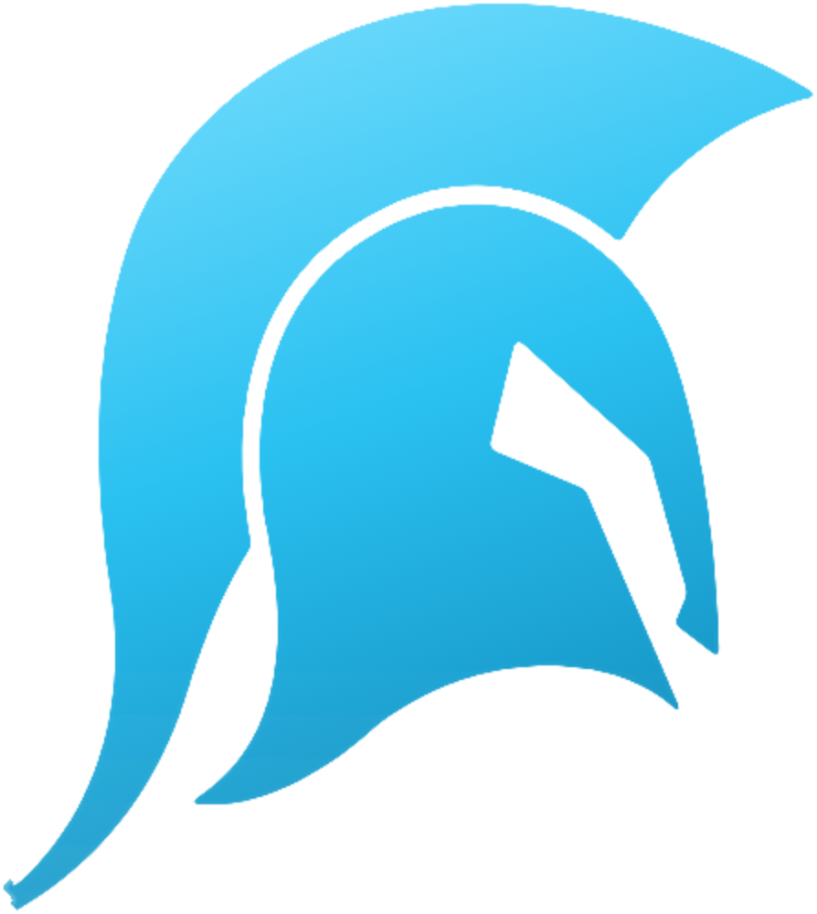

Primera parte · El seguimiento
NUVIA
MARTÍNEZ
Marketing Director
«La persona no dijo que no. Dijo “todavía no”. Nuestro trabajo es no soltarla.»
Action Leaders Training · 24 nov
LIDERA · FORMA · IMPACTA · TRASCIENDE
Tema de hoy · Habilidad: el cierre
La fortuna está en el seguimiento. El resultado está en cerrar.

Su anfitrión de hoy
«Hoy aprendemos a convertir un “lo voy a pensar” en una decisión.»
Anuncios · Así va el equipo
Josué Delgado:
24 DÍAS SEGUIDOS
Le siguen Karla Calderón, Betty Amador y Edwin García Go con 23.
Faltan 17,700 pts. El mes cierra el lunes 30 a las 6:00 p.m.
Anuncios
Arriba de su CRM está «⏰ Hoy le toca»: las personas a las que les toca seguimiento hoy, con su WhatsApp a un toque.
Actívelo y olvídese de la fecha: cuida su viaje, sus puntos dobles y es el ejemplo que su equipo va a copiar.
🎓 Training jueves 26 y domingo 29, 8:00 p.m.
📞 Llamada de liderazgo domingo 29, 9:15 p.m.
🏁 Cierre del mes inCruises: lunes 30, 6:00 p.m. hora de Honduras.
Ya está en su rutina: la declaración de éxito es el primer punto del día. Es requisito para su día completo (no suma puntos).
Primera parte · El seguimiento
«La persona no dijo que no. Dijo “todavía no”. Nuestro trabajo es no soltarla.»
Lo que dice nuestra app este mes
registradas en la rutina del equipo. Y entraron 33 socios nuevos: por cada 38 presentaciones, 1 decisión.
en los CRM del equipo. Ya vieron el negocio. Están esperando que alguien les ayude a decidir.
listos o casi listos. Quedan 6 días para el cierre del mes: ese es nuestro mercado de esta semana.
No nos faltan prospectos. Nos falta dar el siguiente paso con los que ya tenemos.
Parte 1 · El seguimiento que avanza
«¿Qué le pareció?»
«¿Qué fue lo que más le gustó?»
«Avíseme cualquier cosa.»
«¿Le parece si hablamos mañana a las 7?»
«No lo quiero presionar.»
«Mi trabajo es ayudarle a decidir.»
«Ya le escribí una vez.»
«Le escribo hasta tener un sí o un no.»
Parte 1 · Con la app
CRM › ⏰ Hoy le toca: empiece el día por esa lista.
Escríbale por WhatsApp desde la app con una pregunta, no con un «¿y qué pasó?».
Toque ✅ Seguimiento y anote ¿Por dónde? y ¿Qué le dijo?
Siempre deje la próxima fecha. Si le dice que quiere empezar, elija 🚀 Quiere empezar: pasa solo a «Por cerrar».
Cada seguimiento suma en su rutina: «🔁 Hacer seguimiento».

Segunda parte · El cierre
«Cerrar no es convencer. Es ayudar a la persona a tomar la decisión que ya quiere tomar.»
Parte 2 · El cierre
«Del 1 al 10, ¿qué tan listo se siente para empezar?»
«¿Qué le falta para llegar a 10?» Escuche. Esa es la única duda que hay que resolver.
«¿Le parece si creamos su cuenta ahorita, juntos?» Si duda, una Llamada de 3 con su líder.
Un «no» claro también es avance: lo pasa a «Más adelante» y sigue con el siguiente.
Parte 2 · El cierre con la app
En la ficha de alguien «Por cerrar», el WhatsApp le da 4 mensajes: Retomar Resolver dudas Mostrar la plataforma Plan de acción
¿Tiene dudas? Pídale apoyo a su líder: 📞 Llamada de 3
Al volver, toque ✅ Ya le di seguimiento · anotar qué me dijo
Cuando entre: cámbielo a Socio o Cliente y mándele su bienvenida con Bienvenida socio nuevo
Su tarea · próximas 48 horas
Abra «⏰ Hoy le toca» y registre 5 seguimientos con «✅ Seguimiento», cada uno con próxima fecha.
A cada persona «Por cerrar» pregúntele: «Del 1 al 10, ¿qué tan listo está? ¿Qué le falta para llegar a 10?»
Agende 1 Llamada de 3 con su líder antes del jueves.
El jueves lo vemos en CRM › «📊 Mis estadísticas».
Escriba en el chat: ESTA SEMANA YO CIERRO 🔥
#HASTAQUEFUNCIONE